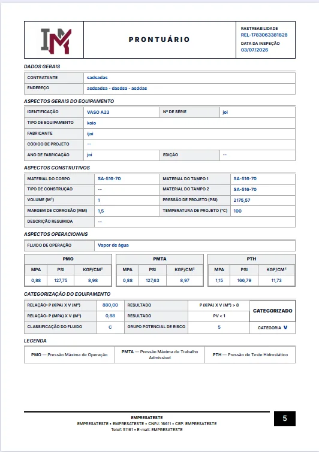
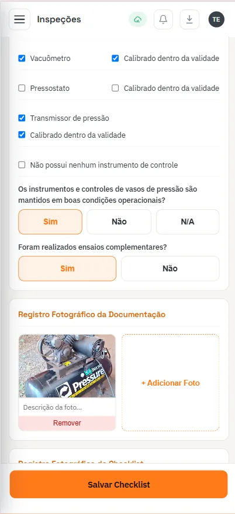

Este artigo trata da entrega: o que acontece com o documento depois que ele foi emitido e assinado. Como produzir o laudo em volume é assunto de laudo NR-13 em minutos; o que avaliar ao contratar um sistema inteiro está em como escolher software de gestão NR-13. Aqui o público é quem presta serviço de inspeção para várias empresas e precisa que cada uma encontre os próprios documentos sem depender da sua equipe.
Por que a entrega por e-mail e WhatsApp quebra depois de alguns clientes
Com três ou quatro clientes, mandar o PDF por e-mail funciona. O engenheiro lembra quem recebeu o quê, e quando alguém pede de novo ele acha na pasta enviada. O modelo começa a falhar quando a carteira cresce e os documentos passam a ter vida longa — e documento de NR-13 tem vida longa por definição: o relatório de uma inspeção vale até a próxima, e o histórico vale enquanto o equipamento existir.
Os sintomas aparecem sempre na mesma ordem:
- Pedido urgente de reenvio. O contato que recebeu o e-mail saiu da empresa, a caixa foi apagada ou o anexo está numa conversa de WhatsApp de um celular trocado. O pedido chega quando o auditor já está marcado.
- Versão errada circulando. O relatório foi corrigido depois de uma revisão, mas o cliente guardou a primeira versão. Na auditoria aparece o documento superado, com dado divergente do que está no seu arquivo.
- Documento incompleto. O cliente tem o relatório, mas não tem o certificado de calibração da válvula de segurança que o sustenta, nem a ART. Cada anexo foi enviado numa mensagem diferente.
- Retrabalho silencioso. Localizar, conferir e reenviar parece tarefa de cinco minutos. Multiplicada por dezenas de clientes e por várias vezes ao ano, vira uma função inteira que ninguém orçou.
Nenhum desses problemas é técnico. O laudo está certo, a inspeção foi bem feita. O que falha é o canal: e-mail é meio de envio, não de guarda. Enquanto a entrega depender da caixa de entrada de uma pessoa, a empresa de inspeção continua sendo, na prática, o arquivo do cliente — e recebe a ligação toda vez que ele não acha algo.
O que um portal do cliente precisa ter
"Portal" virou palavra de folheto: qualquer pasta compartilhada na nuvem é vendida como área do cliente. Para documentação NR-13, seis características separam um portal que resolve de um que só muda o problema de lugar.
1. Acesso separado por empresa atendida
Cada cliente entra com o próprio login e enxerga apenas os próprios equipamentos. Link público de pasta, que qualquer pessoa com o endereço abre, não é controle de acesso — e relatório de inspeção carrega dado de processo, pressão de operação e condição de ativo que o cliente não quer ver circulando.
2. Documentos organizados por equipamento
O auditor não pergunta "cadê o laudo de março": pergunta "cadê a documentação deste vaso". O portal precisa abrir pela TAG ou identificação do equipamento e mostrar, naquele ativo, tudo o que existe sobre ele. Organização por data de serviço ou por número de pedido obriga o cliente a saber em qual inspeção está o documento que ele procura.
3. Vencimentos visíveis
A ficha do equipamento deve trazer a categoria NR-13, a situação e a data da próxima inspeção. O cliente que vê o vencimento se aproximar liga para você para agendar — em vez de ligar depois, quando o prazo já passou, pedindo o documento antigo.
4. Download na hora, sem intermediário
O teste é simples: o gerente de manutenção, com o auditor na sala, consegue abrir o PDF do relatório em menos de um minuto, pelo celular, sem ligar para ninguém? Se a resposta depender de alguém da sua equipe estar disponível, não é portal, é fila de atendimento.
5. Controle de quem acessa
Pessoas saem da empresa cliente. O portal precisa permitir incluir e retirar acessos sem mexer nos documentos, e o login precisa pertencer à empresa, não a um e-mail pessoal que vai embora com o funcionário.
6. Histórico preservado, versão vigente clara
As inspeções anteriores continuam disponíveis, em ordem cronológica, porque o histórico é parte da avaliação de integridade. Mas precisa estar claro qual é o documento vigente — voltaremos a esse ponto adiante, porque é onde muitos portais falham.

Quais documentos publicar em cada equipamento
O portal vale pelo que está dentro dele. Publicar só o relatório final resolve metade do pedido de reenvio; a outra metade é o anexo que o fiscal pede em seguida.
Role para o lado para ver a tabela inteira
| Documento | Quando muda | O que o cliente faz com ele |
|---|---|---|
| Prontuário | Na reconstituição ou em alteração do equipamento | Comprova dados de projeto, PMTA e categoria |
| Relatório de inspeção de segurança | A cada inspeção periódica ou extraordinária | Comprova a condição do equipamento e a data da próxima inspeção |
| Anotações do livro de registro de segurança | A cada ocorrência e a cada inspeção | Mostra a sequência de eventos do ativo |
| Certificados de calibração | A cada calibração de PSV e manômetro | Sustenta o relatório perante o fiscal |
| ART | A cada serviço executado | Identifica o responsável técnico pelo documento |
| Recomendações e pendências | Quando são abertas ou encerradas | Programa manutenção e comprova o atendimento |
O prontuário merece atenção especial. Muitos clientes não têm o original do fabricante, e o prontuário reconstituído pela sua empresa passa a ser o único documento de projeto daquele equipamento — situação detalhada em caldeira sem prontuário. Se ele fica só no seu arquivo, o cliente depende de você para existir documentalmente.
O livro de registro de segurança é o outro ponto sensível: quando as anotações são geradas a partir do relatório, publicá-las junto evita que o cliente mantenha um livro que diz uma coisa e um relatório que diz outra. Os certificados da calibração de válvula de segurança devem ficar vinculados ao equipamento e à inspeção em que foram usados, não soltos numa pasta de "certificados".
Versão certa: um documento vigente, histórico preservado
O problema de versão não se resolve pedindo para o cliente "jogar fora a anterior". Resolve-se com uma regra de publicação:
- Só documento fechado vai para o portal. Rascunho, versão em revisão e documento aguardando assinatura do Profissional Habilitado ficam do lado de dentro.
- Cada documento tem identificador único. Código de rastreabilidade e data da inspeção no próprio PDF, para que qualquer pessoa confira se o papel na mão é o mesmo do sistema.
- Correção gera nova emissão identificada, não substituição silenciosa. O cliente precisa conseguir ver que houve revisão e qual é a vigente.
- O histórico não é apagado. Inspeções anteriores continuam disponíveis porque são elas que mostram a evolução do equipamento.
Essa disciplina depende de como o documento é produzido. Se o relatório é montado num editor de texto e salvo com nomes como "final_v3_revisado", nenhuma regra de portal segura a bagunça. Quando o relatório sai de um fluxo padronizado — o que está descrito em relatório NR-13 em minutos — o identificador e a data já nascem no documento.
O portal não muda o que o documento é. O relatório continua sendo relatório de inspeção de segurança, com o conteúdo exigido pela NR-13, assinado pelo Profissional Habilitado e com ART registrada. O portal também não transfere ao prestador a obrigação do proprietário do equipamento de manter a documentação disponível no estabelecimento. Ele é o canal de acesso — e o conteúdo mínimo do documento está em como gerar laudo NR-13.
Portal como argumento comercial e de renovação
Para a empresa de inspeção, o portal tem um efeito que vai além de reduzir ligação: ele muda onde está o histórico do cliente.
Na proposta
Em concorrência, a maioria das propostas de inspeção NR-13 diz a mesma coisa: Profissional Habilitado, ART, relatório conforme norma. Mostrar ao comprador a tela em que ele vai encontrar a documentação de cada equipamento, com vencimento e download, é um diferencial que ele entende sem precisar saber o que é PMTA. Para o gestor de manutenção, é a promessa de que a próxima auditoria não vai começar com uma caça a arquivos.
Na renovação
O contrato de inspeção é recorrente pela própria natureza da norma: o equipamento volta a ser inspecionado no prazo da sua categoria. Quando o cliente acumula anos de relatórios, espessuras e certificados organizados no seu portal, trocar de prestador significa reorganizar tudo isso em outro lugar. Não é aprisionamento — os documentos são dele e devem poder ser baixados a qualquer momento —, mas é continuidade com valor real, e quem compra percebe.
No agendamento
O vencimento visível na ficha do equipamento trabalha para você. O cliente vê que o exame externo do vaso vence no próximo trimestre e pede orçamento antes de o prazo apertar, o que deixa a sua agenda de campo mais previsível. Para quem opera com SPIE ou com parque grande, esse controle por equipamento é exatamente o que a planilha de inspeção deixa de sustentar com o tempo.

Como implantar sem trabalho dobrado
O portal vira trabalho dobrado quando é um lugar a mais: a equipe emite o relatório num sistema, salva o PDF, entra em outro sistema e sobe o arquivo. Em semana cheia, a segunda etapa atrasa, e o portal fica desatualizado — o que é pior do que não ter portal, porque o cliente passa a desconfiar do que está lá. A implantação que funciona segue uma ordem:
- Portal no mesmo lugar em que o documento é produzido. O checklist de campo alimenta o relatório, o relatório fechado é publicado, e ninguém sobe arquivo à mão. Esse é o critério que separa um sistema de inspeção de um repositório de PDFs.
- Comece pelos clientes com fiscalização ou auditoria mais próxima. São os que mais pedem reenvio e os que mais vão valorizar o acesso. Os demais entram na próxima inspeção de cada um.
- Cadastre primeiro os equipamentos, depois o histórico. Com a ficha técnica e o documento vigente de cada ativo, o portal já responde à fiscalização. Relatórios antigos podem entrar aos poucos, do mais recente para o mais antigo.
- Crie os acessos por empresa, em nome de uma função. Manutenção, segurança do trabalho ou qualidade — não o e-mail pessoal de quem contratou.
- Mude a mensagem de entrega. Em vez de anexar o PDF, o e-mail de conclusão avisa que o documento está disponível no portal. Em poucos ciclos o cliente aprende onde procurar.
- Mostre o portal na reunião de entrega. Cinco minutos com o gestor, abrindo um equipamento dele, evitam dezenas de ligações ao longo do ano.
No Sistema NR13, o portal do cliente é o último módulo do mesmo fluxo: o checklist preenchido no celular gera o relatório em PDF, o livro de registro é atualizado a cada relatório salvo, e o cliente encontra, por equipamento, a ficha técnica e as abas de documentação, prontuário, registros, histórico e acessórios.
Perguntas frequentes sobre portal do cliente para empresa de inspeção
O que é um portal do cliente para empresa de inspeção?
É uma área com login em que cada empresa atendida acessa a documentação dos próprios equipamentos: relatórios de inspeção, prontuário, livro de registro de segurança, certificados de calibração e ART, organizados por equipamento, com o vencimento da próxima inspeção à vista e download imediato do PDF.
Entregar o laudo NR-13 pelo portal substitui a entrega formal ao cliente?
O portal é o canal de acesso, não muda o conteúdo nem a validade do documento. O relatório continua assinado pelo Profissional Habilitado, com ART registrada, e a guarda da documentação no estabelecimento continua sendo obrigação do proprietário do equipamento. O que o portal elimina é a dependência de anexo em e-mail antigo.
O cliente consegue ver documentos de outra empresa no portal?
Não deve conseguir. O acesso precisa ser separado por empresa atendida, de modo que cada login enxergue apenas os equipamentos daquele cliente. Portal que depende de link aberto ou pasta compartilhada sem controle de acesso não serve para documentação técnica.
Quais documentos devem ficar disponíveis por equipamento?
No mínimo o prontuário, os relatórios de inspeção de segurança em ordem cronológica, as anotações do livro de registro de segurança, os certificados de calibração de válvulas de segurança e manômetros e a ART de cada serviço, além da ficha técnica com categoria NR-13, PMTA e situação do equipamento.
Implantar portal do cliente dá trabalho dobrado para a equipe?
Só quando o portal é um lugar separado onde alguém precisa subir o PDF depois de pronto. Quando o relatório é gerado no mesmo sistema em que a inspeção é registrada, a publicação acontece no fechamento do documento, e a única tarefa nova é cadastrar o acesso de cada cliente uma vez.
Precisa disso resolvido por engenharia habilitada?
A Axial Engenharia executa inspeção NR-13 com Profissional Habilitado e ART registrada e entrega a documentação pelo portal do cliente, atendendo presencialmente Vitória, Vila Velha, Serra, Cariacica, Viana, Guarapari e Fundão, com deslocamento programado para Anchieta, Aracruz e Linhares. Mande a lista dos equipamentos pelo WhatsApp e o escopo volta no mesmo dia útil.